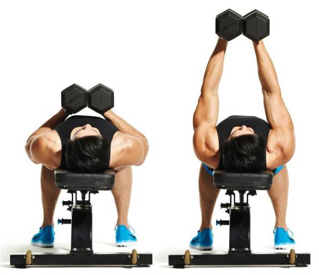
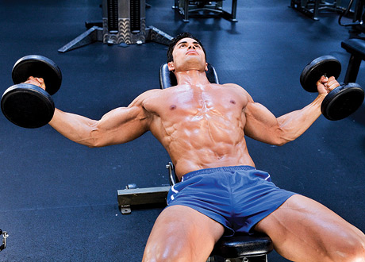
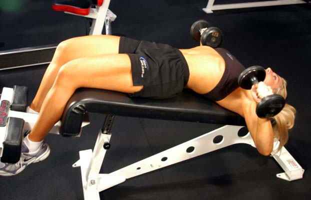
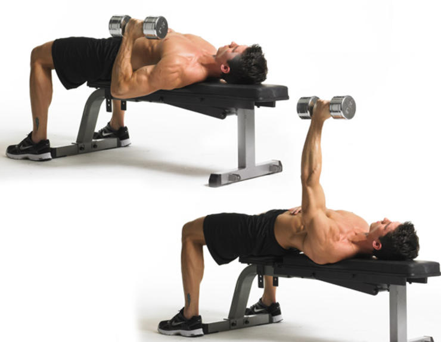
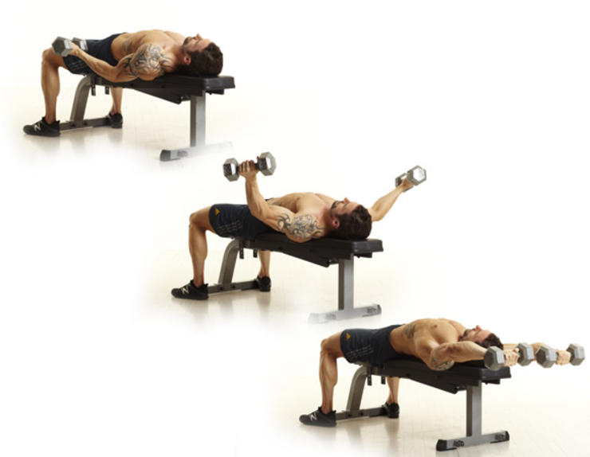

Sample workout 1
Dumbbell Squeeze Press
Squeezing the weights together during a chest press shifts all the stress onto your pectorals. This simple tweak engages them throughout the entire range of motion, which is a key factor in maximizing muscle growth. Do it: Lie on a bench holding a pair of dumbbells with your arms straight above your chest, palms facing together. Let the weights touch and squeeze them together as hard as possible. Maintain this squeeze the entire time, making sure the dumbbells stay in contact with each other. Lower the weights to the sides of your chest, and then push them back up to the starting position.
Chest Squeeze Pushup

Do it: Place two dumbbells next to each other so that they’re touching with the handles are parallel to each other. Assume a standard pushup position, grabbing a dumbbell handle with each hand. Your arms should be straight and your body should form a straight line from your ankles to your head.
Close-Grip Bench Press


Do it: Using an overhand grip that’s a bit narrower than shoulder width, hold a barbell above your sternum with your arms straight. Lower the bar to your chest. Hold for 1 second. Press the bar up.
Cable Fly
Do it: Attach two stirrup handles to the high-pulley cables of a cable-crossover station. Grab a handle with each hand, and stand in a staggered stance in the middle of the station. Your arms should be outstretched but slightly bent. Lean forward slightly at your hips; don’t round your back.
Decline Dumbbell Bench Press
Do it: Lie on a decline bench with your shins hooked beneath the leg support. Hold a pair of dumbbells above your chest with your arms straight. Your palms should face your feet and the weights should be just outside your shoulders.
Archer Pushup

Do it: Assume a pushup position with your left hand directly under your shoulder. Fully extend your right arm straight out to your side and place your hand on a medicine ball or low step. Bend your left elbow to slowly lower your chest down to the floor, making sure to keep the brunt of your bodyweight on your left hand.
Plyometric Pushup

Do it: Get into a pushup position, your hands just outside your chest, your feet shoulder-width apart, and your body forming a straight line from head to heels. Brace your core.
Single-Arm Dumbbell Bench Press
Do it: Lie with your back flat on a bench holding a dumbbell in your right hand. Press the dumbbell directly over your chest until your arm is straight. Slowly lower the dumbbell to the right side of your chest.
Dumbbell Around The World
Do it: Start by lying on a bench and holding a pair of dumbbells with your palms facing up just outside your hips.
Suspended Pushup

Do it: Grab the handles of a TRX strap and extend your arms in front of your chest. Your feet should be shoulder-width apart and your body anywhere from 45 degrees to parallel from the floor. Your body should form a straight line from head to heels.
Suspended Pushup
Do it: Grab the handles of a TRX strap and extend your arms in front of your chest. Your feet should be shoulder-width apart and your body anywhere from 45 degrees to parallel from the floor. Your body should form a straight line from head to heels.
Standing One-Arm Landmine Press

Do it: Perform this unique exercise by placing one end of a barbell securely into the corner, grabbing the opposite end with one arm. Stand with your feet shoulder-width apart, bending slightly at the knees while pushing your butt back.